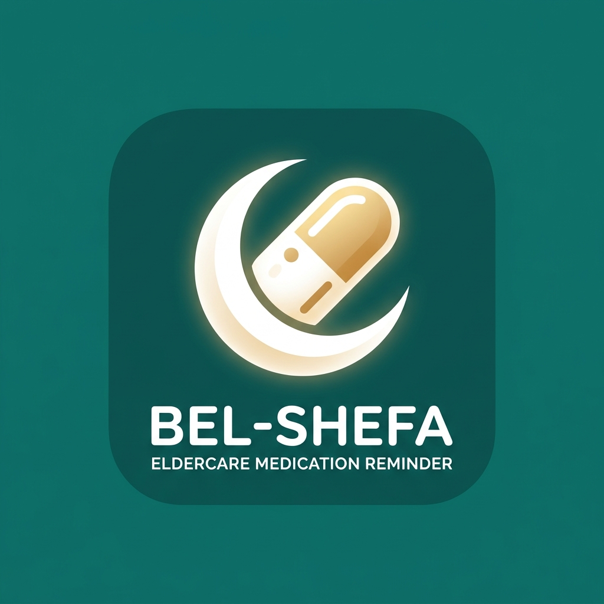

<!doctype html><html lang="ar" dir="rtl"><meta charset="utf-8"><title>بالشفا — صورة المتجر</title><style>
*{box-sizing:border-box}body{margin:0;background:#faf7f2;font-family:Tahoma,Arial,sans-serif}main{width:1024px;height:500px;display:flex;align-items:center;padding:54px 60px;gap:42px;background:linear-gradient(135deg,#faf7f2 65%,#d4eee8)}section{flex:1}h1{font-size:76px;line-height:1.4;color:#115e59;margin:0 0 12px}p{font-size:30px;line-height:1.7;color:#292524;margin:0}small{font-size:22px;color:#115e59;display:block;margin-top:30px}img{width:330px;height:330px;border-radius:36px}footer{margin-top:18px;font-size:17px;color:#57534e}
</style><main><section><h1>بالشفا</h1><p>معاك في كل ميعاد</p><small>مواعيد الأدوية · تأكيد كل دواء<br>رسائل بصوت تحبه</small><footer>أداة تنظيم وتذكير للمريض والمرافق</footer></section></main></html>